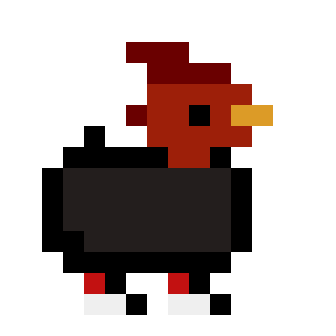

Este projeto foi criado e desenvolvido no senac de 11/2024 a 01/2025 Conta com uma tela de seleção de personagem onde disponibiliza 4 personagens utilizaveis para o jogo. Este jogo conta com o sitema de elementos onde cada pode cauterar um especifico. Agua ganha de fogo, fogo ganha de grama, grama ganha de raio, raio ganha de agua....
O jogo se passa em um vasto mundo aberto, dividido em diferentes biomas, como florestas densas,
montanhas nevadas e cavernas misteriosas. Cada bioma é habitat de tipos específicos de criaturas, chamadas Pokémonfera.
O jogador, como um treinador iniciante, começa sua jornada com um Pokéball especial, que tem a habilidade de se adaptar ao Pokémon que está sendo
capturado. Ao explorar, o jogador encontrará Pokémon que variam em raridade, poder e comportamento.
A mecânica de captura é dinâmica: os jogadores devem usar estratégias para capturar Pokémon de diferentes maneiras. Por exemplo, alguns Pokémon podem ser
mais fáceis de capturar com certos itens, como Frutas Seladoras, enquanto outros exigem uma abordagem mais técnica, como usar o Modo Drone, onde o jogador
envia uma unidade mecânica para estudar e enfraquecer o Pokémon antes de tentar a captura.
As batalhas em Projeto Poke não são apenas uma troca de ataques; elas envolvem uma série de mecânicas que vão além do simples combate turn-based. Cada Pokémon tem um estilo de luta único, influenciado pelo seu tipo (fogo, água, elétrico, etc.), mas também por sua personalidade e nível de experiência. Isso significa que a mesma espécie de Pokémon pode se comportar de maneira diferente em cada batalha, o que exige que o jogador se adapte constantemente. Além disso, o Sistema de Táticas de Combate foi desenvolvido para dar aos jogadores mais controle durante as batalhas. Antes de cada luta, o jogador pode escolher um Plano de Ataque baseado em três diferentes abordagens: ofensivo, defensivo ou equilibrado. Essa escolha influencia como o Pokémon se comportará durante a batalha, e as decisões do jogador têm impacto direto na eficácia de suas estratégias.
O projeto começou como uma iniciativa pessoal, mas rapidamente evoluiu para algo maior, envolvendo outros entusiastas de tecnologia e fãs de Pokémon. A proposta central do Projeto Poke é criar um jogo inspirado no mundo Pokémon, no qual os jogadores podem capturar criaturas, batalhar entre si e explorar diferentes ambientes, mas de uma maneira que permita a equipe de desenvolvimento aprender, praticar e experimentar com as várias etapas do desenvolvimento de software.
Se quiser ver mais sobre o jogo vejo no meu github